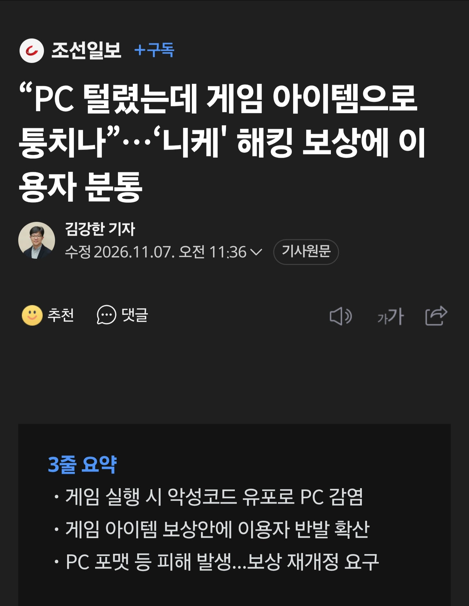
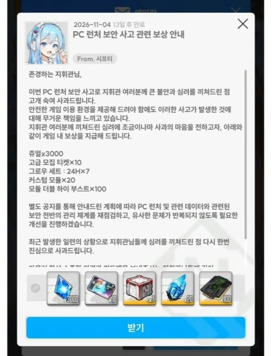
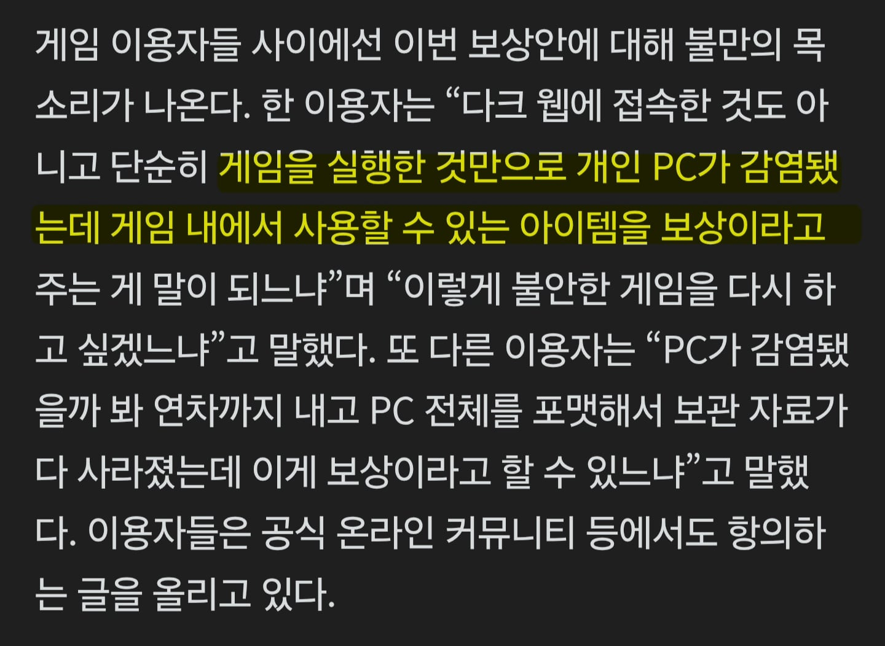

https://n.news.naver.com/mnews/article/023/0004008328



어 아이템 먹고 떨어져 ㅋㅋ
https://n.news.naver.com/mnews/article/023/0004008328



어 아이템 먹고 떨어져 ㅋㅋ
애초에 데차라는 화려한 전과가 있는 회사 게임에 좋다고 들어간 애들이니까
좋다고들 접속하더라 ㅋㅋ
돈도 안드는 데이터 쪼가리 먹고 떨어져 시전 ㅋㅋㅋㅋㅋ
여태 게임에 지른거 환불해 줘야 하는 상황 아니냐?
텐센트 잘못이라 자기네들은 잘못 없는데수웅 하고 있을듯?
지들이 능력이 없어서 아몰랑 니들이 다 해줘~
해서 짱1꺠 회사에 다 떠넘기고 돈 빨아 먹고 있다가 발생 했으면
책임 져야지 ㅋㅋㅋ
ㅈ같은 회사 진짜
애초에 저거 정하는거는 레벨인피니트 권한임
암만 개발사의 영향력을 행사한다고 해도 운영은 레벨인피니트라 뭐 더 못해
저래도 대가리 깨져서 스토리가 어쩌고 하는거 보면ㅋㅋㅋ
이건 게임사가 문제가 아니라 배급사문제아님?
??? : 사료 먹고 떨어져라 개돼지들아
꾸웩꾸웩꾸에에에ㅔㄱ
ㄹㅇ 보상 짜침
9만원짜리 스킨만큼 화가남
서비스도 중국회사고 해킹당한것도 중국회사인데 너무 분위기에 휩쓸려서 니케만 집중타격하는거같은데
겜 안하는 나도 니케보단 텐센트쪽 문제라고 생각하는데 이상하게 시프트업이 욕먹음 보상이 짜서 그런가?
사료도 대응도 레벨인피니트가 정하는거라 시프트업 저새키들 아무런 권한도 없는 ㅄ들임
커뮤니티 반응 보니까 게임을 플레이 하는 유저들이 큰 문제라고 그러더라.....
맨날 욕하면서 플레이 하면서 왜 자꾸 자기들이 화났다며 이리저리 떠들고 다니냐고....
저런 겜하는 애들은 다 그래..
아 소환석 2천만큼 화나내
최신 스킨 말고 오래된 스킨 1개 선택권이라도 줬음 사람들 화는 안냈음.
분노(접속하며)
시프트업이 잘못한게 없다곤 안하겠은데 텐센트쪽이 털려버린건데?
게임 개발사는 잘못없는거아님?
근데 소비자가 원인을 구분할 이유가 있음? 배달 음식 시켜서 배달 기사 실수로 음식 망가졌는데 식당이 먼저 해결해주고 그 다음 식당이 배달기사한테 문제 제기하지 않나? 비슷한 다른 경우도 보상 후 구상권 청구 방식 아님?
ㅇㅇ 그럴때 배달기사 욕하지 식당 욕하지는 않으니까
식당에서 먼저 보상 안해주면 식당 욕하는거아님? 환불해주거나 보상해준 다음에 사정 설명하면 아오 배달기사 때문이네 ㅇㅋ 하지
배민이 책임지고 보상해주지 않나? 이 경우는 배급사고.
그 경우는 상관없지 배민이 보상해줄 수 있으니까 소비자는 환불 받으면 끝이니 근데 이 경우는 소비자가 레벨 인피니트 상대로 뭘 할 수 있는게 없잖아 중국 회사 아님?
게임내문제(버그로 인젝션터짐 등)면 개발사쪽이 맞는데 게임외문제면 퍼블리셔쪽아냐?
그리고 대외적으로 뭐 대응해야하는것도 퍼블리셔쪽아닌가
나도 시프트업 억울한 케이스 맞다고 생각하는데 운영사가 보상 없이 넘어가려고 하면 소비자가 항변할 대상은 뭐 시프트업 밖에 없는거지
근데 왜 니케를 욕하는거야?
내가 제조업체인데 유통회사가 털려서 개인정보가 나가면 내가 책임져야해?
이미지관리상 지들이 책임지고 구상권청구를 운영사나유통사에 청구하는게 관례같은거긴 하지 ㅇㅇ
사실 사람들은 시프트업이 만든 게임이라고는 알고있지만 운영사가 텐센트인지 텐센트 자회사인지 알고있는사람은
생각보다 적었을거임 ㅇㅇ
ㅇㅇ 이미지관리상은 맞는데 그걸 욕하니까 이제는 욕한 애들이 문제같음
몰라 니케 욕하래
이거 텐센트가 제일 문제라며,
그리고 이런 상황에서 피해를 어떻게 소명하고 어떻게 보상해줘야하는거임?
솔직히 저기에 홍련 1돌은 줬어야한다 ㅅㅂ...
몰라몰라 사료 더 줘~ 고급 사료 많이많이 달라구!
퍼블리싱회사 런처가 털린거라고 들었는데
그게 맞으면 쟤네도 피해자인데
오 지금 시작해도 주나
회사로 줄소송들어가겠네
근데 니케가 털린게 아니라 텐센트가 털린거라 니케도 피해자긴 해.
은근슬쩍 시프트업 잘못없다고 외치는거 존나 같잖음
중국회사에 퍼블 준 싶업이 빙신 아님?? << 별 개좆같은 논리인거 맞는데
새벽에 일터지고 클라패치도 새벽 2시반에 바로 했으면서 이슈에대해서 확인중이다 pc클라 실행하지마라 같은 공지도 안올리고 나중에 2시반에 클라패치 이미 했다 라는 공지 올리고
퇴근시간 다 되서야 키무라횬타이 트위터에 사과문 띡ㅋㅋㅋㅋ
이딴식으로 대응 하는게 진짜 잘못이 없다고 생각하는 건가?
근데 저 상황에서는 어케해야하는거지
스팀으로 보면 내가 배그 스팀을하다가 스팀이 털려서 ㅈ된 상황인데
배그 만든 크래프톤한테 뭘 요구하고 뭘 잘못됐다고 할 수 있나?
중국 보x 제대로 간수도 못해 ㅡㅡ
통신사 해킹 어물쩡 넘어가진 이후로는 누구도 책임 질 필요 없어짐
저래도 니케 하는애들은 좋아하겠지?